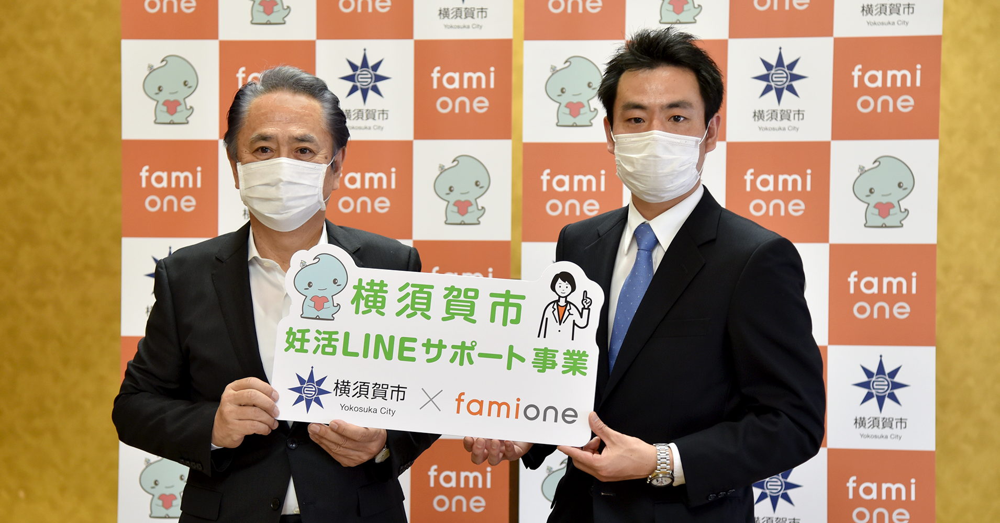
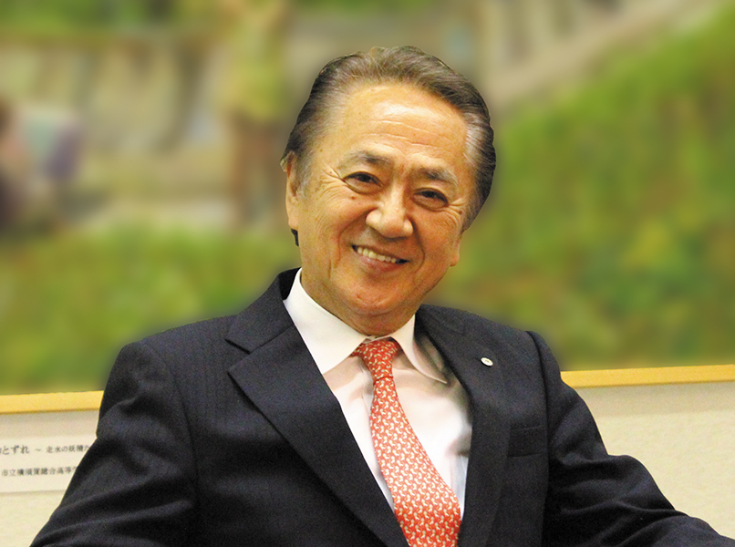
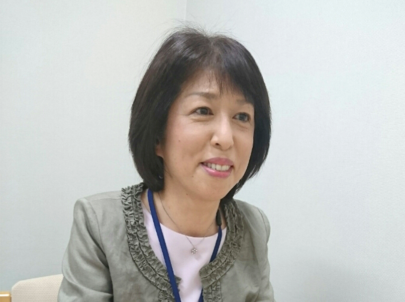
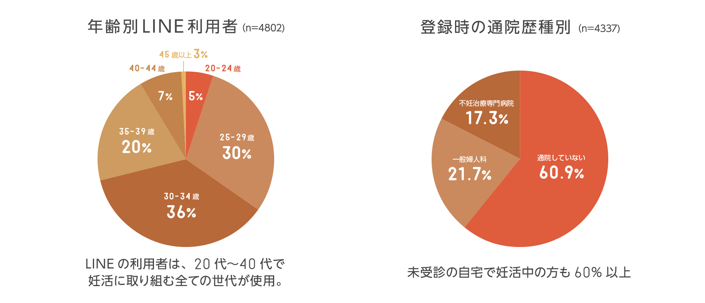
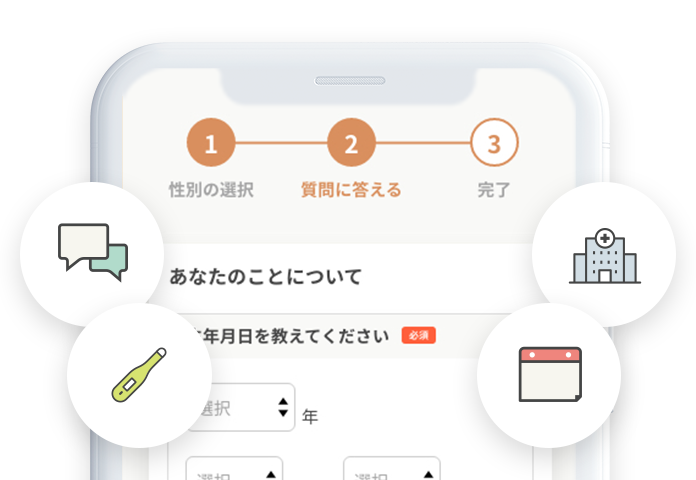
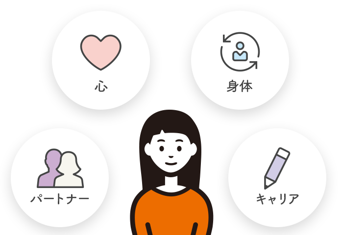
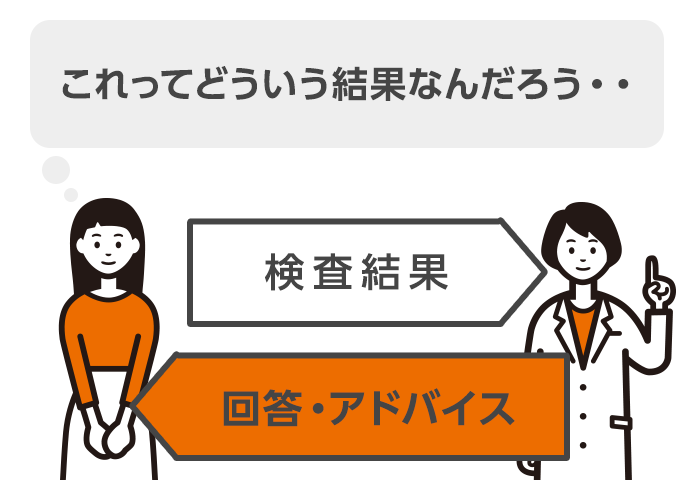

横須賀市での導入事例
近年、妊活へのサポートに取り組む自治体が増えています。
神奈川県横須賀市では2020年5月から、全国に先駆けてLINEを使った妊活支援サービス「ファミワン」を導入いただくことになりました。
横須賀市ではこれまでにどのような課題があり、ファミワン導入に至ったのでしょうか。
今回は横須賀市長の上地克明さんと、こども育成部こども健康課課長の河島夏美さんにお話を伺いました。


全ての世代が妊活について正しく知り、互いを尊重し合う社会に
神奈川県横須賀市
上地克明 市長
-
Q.横須賀市の少子化対策において、現在の課題を教えてください。現在、安心して子どもを産み、育てるための体制の充実、生活・教育環境の整備、仕事と子育ての両立の推進などを進めています。しかし、これらは、まずは子どもがいてこその対策。結婚したとしても妊活に悩む家庭が横須賀市でも増えているというのが現状です。そのため、少子化の根本的な解決のためには、これまで以上に視野を広げて取り組む必要があると感じていました。
-
Q.特に妊活において、どんな点が重要だと考えますか。少子化の要因のうち、初産の平均年齢が高くなっていることもあげられます。「子どもが欲しい」「２人目を」と思ったときに授からないというケースも多く、妊娠に向けて心身を整えることに関しても自治体がサポートすべきポイントだと感じています。
また、妊活に取り組む夫婦だけでなく、その周囲の理解を促すことも大切です。特に、妊活に取り組む夫婦の親世代は「孫の顔が見たい」「そろそろ子どもを産まないのか」など、無意識のうちに、傷つける発言をしている場合もあるかもしれません。未婚の方や子どもを望まない夫婦も、それぞれが妊活について正しく知り、互いを尊重し合う社会にしたいと考えています。全ての世代がしっかりと学んで支えていける仕組みをつくるためにも、まずは市役所の職員がファミワン主催のセミナーや勉強会に参加し、庁内での理解を率先して進めていく予定です。 -
Q.全国初の導入となりましたが、ファミワンへ期待していることについて教えてください。不妊治療を行なっている方はもちろん、妊活をこれから始める方や妊活を始めたばかりの方にも、悩みに寄り添いながらしっかりとしたサポートを行っていくことが大切です。今回のように誰もが使いやすいツールを利用して相談できる環境をつくり、専門家の力を借りることで、より市民のみなさま1人1人に寄り添ったサポートが実現できると期待しています。

LINEを使った妊活支援で、市民1人1人に寄り添えるように
神奈川県横須賀市こども育成部こども健康課
河島夏美 課長
-
Q.これまでの横須賀市が妊活の支援を行う上で感じてきた課題はどんなものですか？平成28年度から妊娠を望んだ時に妊娠・出産しやすいように、女性健康支援相談事業を実施しています。妊娠を望む夫婦を対象に医師や看護師、管理栄養士による妊活支援セミナーの開催や、入籍時に配布するパンフレットで情報発信を行ってきました。しかし、行政の情報はなかなか市民1人1人へは届きづらく、情報発信に限界を感じているところでした。
-
Q.ファミワンを導入しようと思ったきっかけはどんなものだったのでしょうか？妊活や不妊治療について市でも相談窓口は設けてはいますが、もっと市民が気軽に相談できるような環境を整えたいと考えていました。そこで、幅広い年代が利用しているLINEに着目。しかし、行政でLINEを活用するにしても、市民1人1人への返信にどのくらい時間がかかるのかもわからず不安がありました。そんな中でファミワンではLINEを活用した相談実績があり、また不妊症看護認定看護師や臨床心理士、胚培養士などさまざまな専門職の方のお話を聞けるのもいいなと思い、導入を決めました。
-
Q.これからどういった展開を期待していますか？ファミワンの妊活LINEサポート事業で、相談体制をこれまでより一層強化していきたいと考えています。また、妊娠を希望されている方やご夫婦以外の方々へも、早い段階から働きかけをしていきたいです。ファミワンの導入により、市民のみなさまが妊活や不妊治療についての情報がより手に入りやすいものになればと願っております。
ファミワンでのサポート内容と割合
今まで、ファミワンでは様々な妊活の悩みに関して相談サポートしてきました。
これからも専門家ならではの正しい妊活情報をサポートしていきます。

妊活コンシェルジュ ファミワンで出来る事

パーソナルデータに基づいた
妊活チェックシート
妊活チェックシート

妊活中の体のこと、気持ちのサポート、
パートナーのこと、キャリアのことを知る
パートナーのこと、キャリアのことを知る

自分に合った、失敗しない
病院選び
病院選び

検査結果が妥当か？
治療内容など相談できる
治療内容など相談できる
住民の皆さまに、妊活支援をご検討の行政の担当者・議員の方へ
資料請求 サービスのデモ・お見積り依頼 導入実績・効果 サービス活用事例 サービス企画など
お気軽にお問い合わせください。折り返し担当よりご連絡差し上げます。
ファミワンのサービス/セミナーや勉強会についての説明会を開催いたします。
2020年7月20日(月)14:00-15:00 オンライン
参加申し込みの先行登録も問い合わせフォームからお問い合わせください。